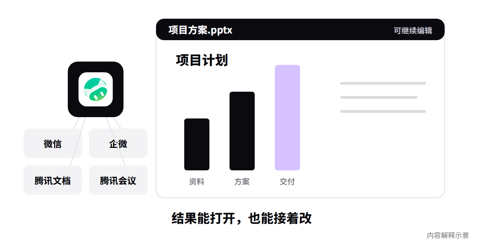
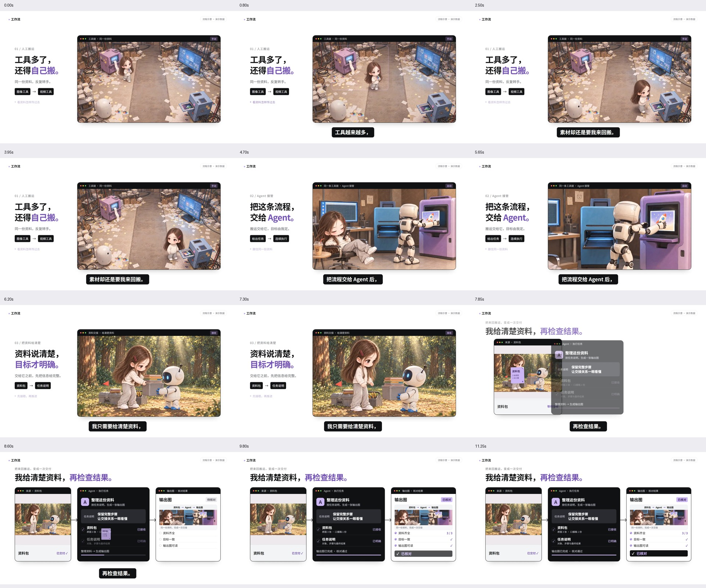

$ui-motion-fusion打开效果库打开统一技能入口在其他对话中调用从完整场景绑定口播并制作UI MOTION FUSION · 2026.10.28.2
我的 UI 动效剪辑
默认沿用下方已认可正文的具体 UI 外观，跨窗口保持，沿此精修质感；Fred 原片作为补充。根据口播重新组织本期材料、构图与动作，效果库负责实现。AIGC 画风与人物身份单独保留。
当前具体 UI 基准 · 2026-10-28 跨窗口确认
就按这期正文的风格
十款 Agent 正文：白与轻灰舞台、近黑实体窗口、粗字层级、清楚的深度关系及当前 A 色。后续沿这套外观提高素材、材质与运动精度；全效果库仍用于设计本期动作和构图。
先看实际画面和动态，再读对应源码。每篇口播重新设计内容，不固定排行榜、侧栏或人物位置。原片开头不在认可范围；有人物时保留全景，特效避开人。



AIGC 画风参考 · 用途确认于 2026-10-20
AIGC 画风参考 · 柔和手绘
这支 11.3 秒样片保留为 AIGC 创作的画风参考：学习手绘材质、光线与画面观感，按本期口播生成新图片，再制作视频。它不指定本期 UI 设计。
人物原图、8 张场景例图和可编辑工程均保留。每期新设计人物、场景和动作；只有本期明确固定 IP 时才延续其身份，不默认复用原图或旧场景。

这个 Skill 能做什么
- 口播语义选材：结合句意、上下文和情绪选择 B-roll，并对应到原句。
- Fred Talk 默认风格：先读UI、AE 感、开头与禁忌，再从效果库选择符合方向的实现；只在用户明确要求时换风格。
- 生成真实 AIGC 动作：先学参考画风，再按口播制作本期场景与动作，不反复套用例图。
- 组织画面与剪辑：蒙版、局部放大、遮挡转场、对象交接、UI 与人物融合。
- 渲染与交付：输出预览、成片和可编辑工程，分别记录技术检查与认可状态。
- 逐句研究参考：秋芝与 Fred 原片逐句证据统一登记；相同方法追加实例，按条目读取实现状态。
主流程 →
先通读整篇口播，结合上下文、因果与情绪，使用下方秋芝研究中的相关原句和实际画面证据理解材料选择，再进入效果库构思本期画面。
秋芝四片逐句对照 →
4 片共 103 分 41 秒 · 2038 条对应 + 16 条补录 · 1060 个视觉观察区间。可搜索原始转写、校字、实际剪辑对应与画面证据，并定位原片。
采用顺序抽帧核对与重点动作密集查看；未完整实时音画听审。提炼 36 条方法（35 条正例 + 1 条明确反例）。制作时把相关方法的原句、上下文与画面证据带入稿件理解，再说明本期采用或不采用的原因；不强制每句引用，也不只附链接。各方法实现状态分别读取。
可用效果库 →
这里提供实现当前已认可 UI 外观的设计、素材组织和动作。按本段表达选择构图、材料形态、窗口组织、字级、层次和动作，查看实际展示与源码再改编。库中条目逐项选择，保留各自验证与认可状态。
剪辑组件与语义配方
本次接入方木十款 Agent 的实际制作源码：配色、实体窗口与纸张、弹性迁移、口播事件和人物开头保护。新工程实际加载模块，再按新稿设计画面；整个效果库保留，不固定排行榜。
9 种带参数的剪辑组件，接入现有工程；10 条按句意选择的配方，包含 3 类连续 AIGC 动作设计。AIGC 按本期内容生成，设计按本期表达从库中选择，演示数据不直接成为本期事实。
- 播放蒙版、遮挡、转场与对象交接可暂停和拖动 · 实际组件接口
- 口播如何自动选到这些能力10 条可检索配方 · 参考观察与适用边界
素材剪辑与声音
先把实际材料、动作与结果剪入原声时间线，再结合 UI。支持源片段选取、材料内部聚焦、全貌与细节切换、同源并置对比及事件音效导出。查看实际接口与使用范围。
保留的原展示与源码
查看 8 张 AIGC 画风例图与使用边界 · 什么时候用、怎么做、怎么剪 · 角色、画风与素材索引
以下实现用于落实 Fred Talk 默认风格，借用完整构图、材料、窗口关系和动作后按口播改编。示例人物和数据不自动进入本期；各条目的运行状态与用户认可范围分别保留。点击后打开预览。
- FredTalk 素材库 · 展示与公开源码101 条未归档公开源码候选 · 实际取源、依赖与适配状态分开查看
- 8 类 F 融合机制 · 原展示无声界面示意 · 场景源码
- 原 O/X 动效与制作资源保留原库导航与能力入口
- 阿渡参考展示与代码对应原参考库 · 条目与源码对应表
- 72 秒 F 融合预览原无声示意视频，展示状态见能力目录
参考与历史 →
需要追溯时再进入：蒸馏报告、标注依据、旧规则与调整记录。保留学习来源，也能分清哪些已成为当前约定。
历史试验与入口整理记录
旧读书开场试验的纠正记录与对应源码仍保留。用户明确该样片远低于要求，仅作参考，不再放在当前质量示范位。
以下保留过程与实现来源。32 秒试验为旧的无声结构预览，21 秒后含待生成占位；整片故事不作为固定模板，整体视觉仍默认 Fred Talk。
- 旧试验 · 32 秒无声结构预览工程估时分镜，含待生成占位
- 旧试验 · 导出结构预览720p / 30fps · 当时的实现与检查范围
- 历史入口整理记录旧入口归档、资源保留与当时的验证